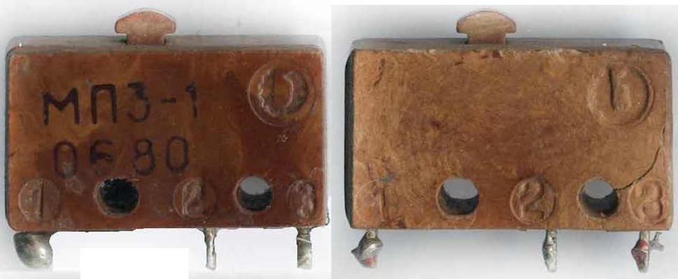
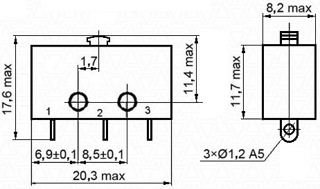
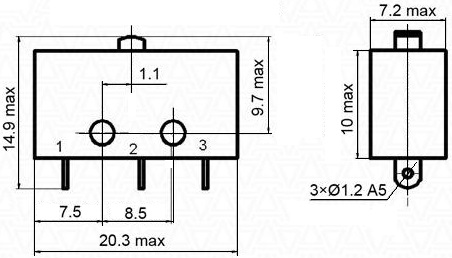

Микропереключатели МП3, МП9
Микропереключатель МП3-1
МП3-1 - микропереключатель малогабаритный однополюсный с одинарным разрывом цепи предназначен для коммутации электрических цепей постоянного и переменного тока в радиоэлектронной аппаратуре, для объёмного монтажа.

Рис. 1 - Внешний вид микропереключателя МП3-1

Рис. 2 - Габаритные и установочные размеры микропереключателя МП3-1
Таблица 1
| Параметр | Значение |
|---|---|
| Напряжение постоянного тока, В | 0,2 ... 30 |
| Напряжение переменного тока, В | 0,2 ... 250 |
| Сила постоянного тока, А | |
| - активная нагрузка | не более 4 |
| - индуктивная нагрузка | не более 2 |
| Сила переменного тока, А | |
| - активная нагрузка | не более 3 |
| - индуктивная нагрузка | не более 2 |
| Максимальная коммутируемая мощность, | |
| - постоянный ток | 70 Вт |
| - переменный ток | 300 ВА |
| Сопротивление контакта, не более, Ом | 0,05 |
| Электрическая прочность изоляции, В | 750 ... 1100 |
| Сопротивление изоляции, МОм, не менее | 1000 |
| Усилие прямого срабатывания, Н, не более: | 0,98… 2,94 |
| Усилие обратного срабатывания, Н | не менее 0,39 |
| Время срабатывания подвижных контактов, с | не более 0,02 |
| Ходы приводного элемента, мм: | |
| - рабочий | 0,15 ... 0,6 |
| - дополнительный | не менее 0,2 |
| - дифференциальный | не более 0,15 |
| Рабочая температура окружающей среды, °C | от -60 до +125 |
| Масса, г | не более 3,5 |
Микропереключатели МП9 и МП9-Р1
Малогабаритный однополюсный микропереключатель МП9 (аналог ПМ24-2) с одинарным разрывом цепи. Выпускается в климатических исполнениях УХЛ и В. Разработаны аналоги данных изделий с улучшенными техническими характеристиками.
Микропереключатель МП9-Р1 имеет пластмассовый корпус, в верхней части металлическая пластина (латунь), которая жмет на кнопку. В нижней части три вывода. Посередине два отверстия под монтаж. Корпус микропереключателя не предназначен к разборке, боковая стенка приклеена. Микропереключатель с маркировкой просто МП9 кнопка сверху не имеет никакой пластины.

Рис. 4 - Габаритные и установочные размеры микропереключателя МП9 (МП10, МП10В, МП11, МП11В)
Таблица 2
| Параметр | Значение |
|---|---|
| Напряжение, В | 0,2 ... 250 |
| Сила тока, А | не более 4 |
| Максимальная коммутируемая мощность, Вт | 70 ... 300 |
| Сопротивление контакта, не более, Ом | 0,05 |
| Электрическая прочность изоляции, В | 750 ... 1100 |
| Сопротивление изоляции, МОм, не менее | 1000 |
| Усилие прямого срабатывания, Н, не более: | 0,98… 2,94 |
| Усилие обратного срабатывания, Н | не менее 0,39 |
| Время срабатывания подвижных контактов, с | не более 0,02 |
| Рабочая температура окружающей среды, °C | от -60 до +125 |
| Масса, г | не более 3,7 |